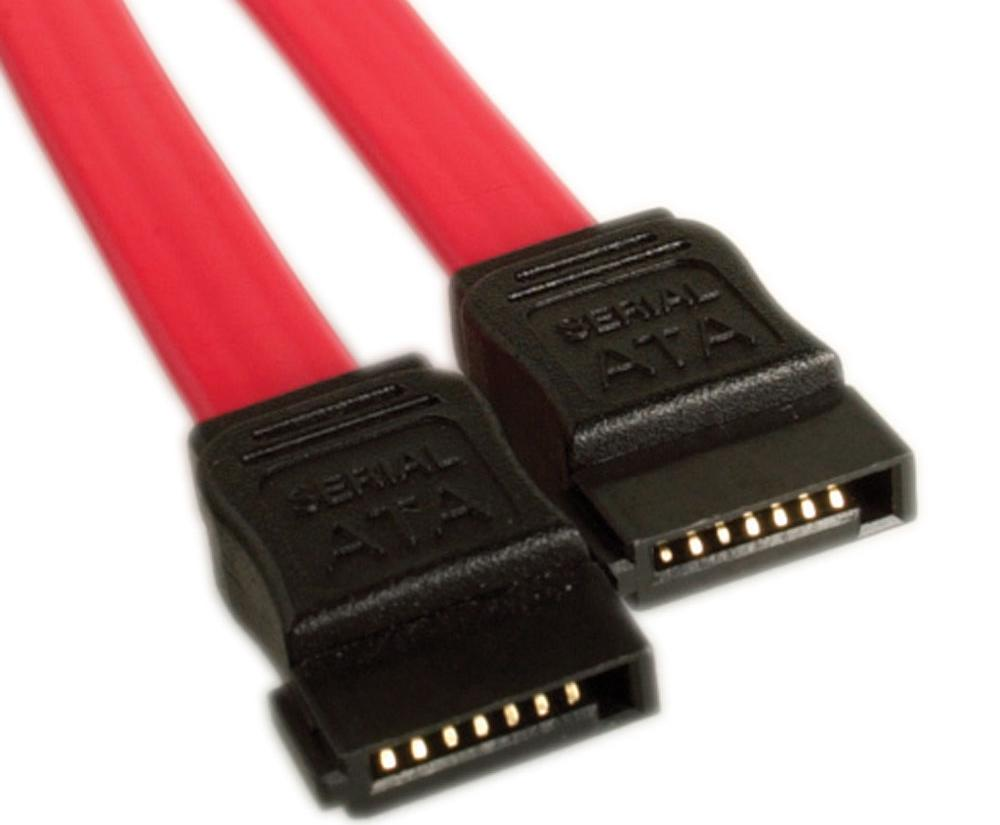

Pour fixer vos disque durs à votre boîtier, rien de bien compliqué ! Cependant la procédure ne sera pas tout à fait la même suivant le choix de votre magnifique boîtier. Certains proposeront une solution sans outils, c'est à dire que vous n'aurez qu'à faire glisser vos disques dans leur compartiment ! D'autres nécessiteront quelques vis (fourni ne vous inquiétez pas) pour fixer solidement le disque. Dans tous les cas, faites en sorte que vos disques durs ne puissent plus « bouger », car en fonctionnement les vibrations pourraient les abîmer. D'ailleurs, sur la plupart des systèmes vous trouverez également des rondelles anti-vibration.
Ci-dessous vous apercevrez deux systèmes de fixation différents, sans outils et avec outils :
Le SATA est une norme de câblage. Elle permet de connecter différents périphériques à la carte mère, notamment les disques durs, les SSD, et les lecteurs optiques (lecteur/graveur DVD, etc.). Dans ce guide nous partons du principe que votre disque dur et/ou votre SSD sont en SATA, dans la très grande majorité des cas ce sera exact mais sachez qu'il existe aussi d'autres types de connectiques pour ces périphériques (comme l'IDE pour les anciens disques durs ou bien le PCI pour certains SSD).
Ci-contre vous pouvez apercevoir le fameux câble SATA.
Reconnaissable entre mille, vous n'aurez aucun mal à repérer les prises coté HDD et carte mère, mais comme je suis trop gentil, voilà des images pour que vous y voyez plus claire. Il suffira donc de connecter votre carte mère et vos disques via le câble SATA. Vous trouverez soit des prise SATA II soit des prises SATA III. La dernière version proposant un débit 2 fois plus élevé que la précédente, vous privilégierez le SATA III pour votre SSD, pour les autres périphériques il n'y aura pas de différence.